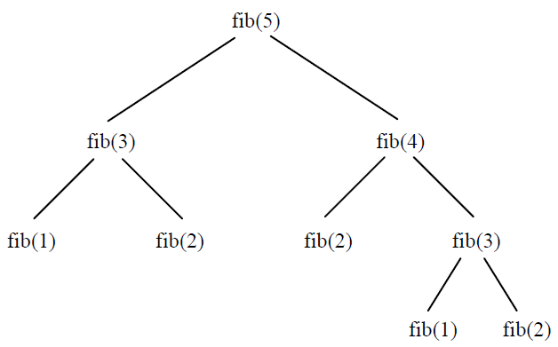

RECURSIVITE¶
# AUTO EVALUATION - A EXECUTER !
# Imports utiles à l'auto-évaluation - Décommenter la ligne ci-dessous
#from correction import q1, q2
Introduction¶
Soit le problème simple du calcul de la somme des \(n+1\) premiers entiers naturels:
Les connaissances de première permettent de résoudre très facilement ce problème en utilisant une boucle (forou while):
def somme(n):
"""
Renvoie la somme des n entiers compris entre 0 et n;
n: entier naturel positif
"""
s = 0
for i in range(n+1):
s += i
return s
somme(8)
36
En procédant ainsi on a résolu le problème en expliquant comment calculer somme(n). On aurait pu aussi arriver au même résultat en expliquant c’est quoi somme(n). En effet,
Ainsi on peut calculer la valeur de somme(n) comme étant une fonction mathématique de \(n\):
En python, cela se programme facilement:
def somme_rec(n):
if n == 0:
return 0
else:
return n + somme_rec(n-1)
somme_rec(3)
6
On remarque que somme_rec(n) fait appel à somme_rec(n-1). Une fonction qui fait appel à elle même est dite récursive.
Exercice d’application directe (Auto-évaluation possible)
La puissance \(n\)-ième d’un nombre \(x\) est la multiplication répétée \(n\) fois de \(x\) avec lui même. Par convention \(x^0=1\). La puissance \(n\)-ième de \(x\) s’écrit:
On peut donc définir une fonction puissance \(n\)-ième de \(x\) telle que:
Coder de manière récursive cette fonction en python.
def puissance(x, n):
# Supprimer l'instruction 'pass' et compléter avec votre code
pass
#Cellule de test - Décommenter et exécuter
#q1.correction(puissance)
La récursivité: simple et magique ?¶
Pour bien comprendre le déroulement de l’exécution de la fonction récursive somme_rec, analysons l’appel somme_rec(4) (on dit aussi l’arbre d’appels).
somme_rec(4)--> return 4 + somme_rec(3)
|
return 3 + somme_rec(2)
|
return 2 + somme_rec(1)
|
return 1 + somme_rec(0)
|
return 0
L’appel de somme_rec(4) provoque une série d’appels en cascade jusqu’à l’appel somme_rec(0) qui renvoit 0. A ce moment là, somme_rec(1) peut se terminer en renvoyant 1, puis somme_rec(2) en renvoyant 3, etc.
Cette succession d’appels rend naturellement les boucles inutiles dans dans une fonction récursive.
Chaque appel de fonction se traduit par le stockage dans une zone mémoire appelée pile, de données liées au contexte d’exécution de la fonction appelante (adresse de retour, paramètres de la fonction, etc.).
Exercice d’application directe
Analyser l’arbre d’appels de puissance(2, 4) et justifier la valeur renvoyée.
#Votre analyse ici
D’autres exemples de fonctions récursives - précautions¶
La suite de Fibonacci: écriture d’une fonction récursive naïve¶
Cette suite est définie pour tout entier naturel \(n\), par:
Ecrire une fonction récursive en python fib(n) qui renvoie le calcul du \((n+1)\)-ième terme de la suite de Fibonacci, compte tenu de la définition ci-dessus.
def fib(n):
# Supprimer 'pass' et compléter avec votre code
pass
#Auto-évaluation - Décommenter et exécuter
#q2.correction(fib)
Analyse de la fonction naïve¶
Jupyter Notebook possède une extension intéressante (les magic commands) qui permet d’appeler une fonction python (ou autre). On va utiliser la commande %timeit fib(n) pour mesurer le temps d’exécution de fib(n).
Par exemple:
%timeit fib(10)
Les résultats sont consignés dans le tableau ci-dessous:
n |
%timeit fib(n) |
|---|---|
5 |
1.2 µs |
10 |
14 µs |
20 |
1.7 ms |
30 |
0.22 s |
35 |
2.4 s |
On constate que la complexité explose rapidement. Essayons de comprendre pourquoi en examinant une partie de l’arbre d’appels de fib(5) par exemple.

Des calculs déjà effectués lors de l’appel de fib(4) sont à nouveau effectués lors de l’appel de fib(3) !!
Conclusion
La traduction naïve d’une fonction mathématique en une fonction récursive peut conduire à une complexité inacceptable.
Des techniques simples existent pour régler le problème précédent et seront abordées plus loin dans le cours de terminale.
Retour sur la pile¶
Après l’avoir décommenter, exécuter la cellule suivante et analyser le résultat obtenu.
"""def f(n):
return 1 + f(n + 1)
f(0)
"""
'def f(n):\n return 1 + f(n + 1)\n\nf(0)\n'
#Votre analyse
Conclusion
La taille de la pile est limitée, le nombre d’appels récursifs est donc limité aussi. Python limite naturellement et assez sévèrement d’ailleurs, le nombre d’appels récursifs. On peut avoir une idée de cette limite avec le code suivant:
import sys
print(sys.getrecursionlimit())
3000
Bien écrire des fonctions récursives¶
Il est généralement simple de traduire une fonction mathématique définie par récurrence en une fonction récursive python.
On veillera néanmoins à ce que le schéma suivant soit toujours présent dans la définition de la fonction:
def f_rec(parametres):
if condition:
#cas de base: cas trivial où la fonction termine
return valeur
else:
#cas récursifs où on appelle à nouveau f_rec
return f_rec(...)
Les différents cas sont typiquement examinés avec des tests if ... else. Enfin, le cas de base peut être … constitué de plusieurs cas!
A retenir¶
La récursivité est une technique de programmation élégante, très proche de la définition mathématique des fonctions ou des problèmes. Les boucles y sont inutiles.
Une fonction récursive est généralement constitué d’un ou de plusieurs cas de base, qui permet(tent) à la fonction de terminer et de cas récursifs.
La récursivité repose sur l’utilisation d’une zone mémoire appelée pile, de capacité limitée. Une erreur est signalée lors d’une tentative de dépassement de cette capacité.
Enfin, il faut toujours être vigilant sur le fait que cette technique appliquée de manière naïve peut engendrer une complexité inacceptable.